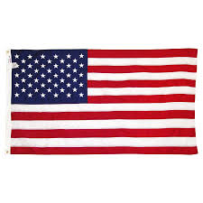

India
India (ISO: Bhārat), also known as the Republic of India (ISO: Bhārat Gaṇarājya),[18][e] is a country in South Asia. It is the seventh largest country by area and with more than 1.3 billion people, it is the second most populous country as well as the most populous democracy in the world. Bounded by the Indian Ocean on the south, the Arabian Sea on the southwest, and the Bay of Bengal on the southeast, it shares land borders with Pakistan to the west;[f] China, Nepal, and Bhutan to the northeast; and Bangladesh and Myanmar to the east. In the Indian Ocean, India is in the vicinity of Sri Lanka and the Maldives, while its Andaman and Nicobar Islands share a maritime border with Thailand and Indonesia. The Indian subcontinent was home to the urban Indus Valley Civilisation of the 3rd millennium BCE. In the following millennium, the oldest scriptures associated with Hinduism began to be composed. Social stratification, based on caste, emerged in the first millennium BCE, and Buddhism and Jainism arose. Early political consolidations took place under the Maurya and Gupta empires; later peninsular Middle Kingdoms influenced cultures as far as Southeast Asia. In the medieval era, Judaism, Zoroastrianism, Christianity, and Islam arrived, and Sikhism emerged, all adding to the region's diverse culture.

USA
The United States of America (USA), commonly known as the United States (U.S. or US) or America, is a country composed of 50 states, a federal district, five major self-governing territories, and various possessions.[g] At 3.8 million square miles (9.8 million km2), the United States is the world's third or fourth largest country by total area[h] and is slightly smaller than the entire continent of Europe's 3.9 million square miles (10.1 million km2). With a population of over 327 million people, the U.S. is the third most populous country. The capital is Washington, D.C., and the largest city by population is New York City. Forty-eight states and the capital's federal district are contiguous in North America between Canada and Mexico. The State of Alaska is in the northwest corner of North America, bordered by Canada to the east and across the Bering Strait from Russia to the west. The State of Hawaii is an archipelago in the mid-Pacific Ocean. The U.S. territories are scattered about the Pacific Ocean and the Caribbean Sea, stretching across nine official time zones. The extremely diverse geography, climate, and wildlife of the United States make it one of the world's 17 megadiverse countries.

China
China, officially the People's Republic of China (PRC), is a country in East Asia and the world's most populous country, with a population of around 1.404 billion.[10] Covering approximately 9,600,000 square kilometers (3,700,000 sq mi), it is the third- or fourth-largest country by total area.[k][16] Governed by the Communist Party of China, the state exercises jurisdiction over 22 provinces, five autonomous regions, four direct-controlled municipalities (Beijing, Tianjin, Shanghai, and Chongqing), and the special administrative regions of Hong Kong and Macau. China emerged as one of the world's earliest civilizations, in the fertile basin of the Yellow River in the North China Plain. For millennia, China's political system was based on hereditary monarchies, or dynasties, beginning with the semi-legendary Xia dynasty in 21st century BCE.[17] Since then, China has expanded, fractured, and re-unified numerous times. In the 3rd century BCE, the Qin reunited core China and established the first Chinese empire. The succeeding Han dynasty, which ruled from 206 BC until 220 AD, saw some of the most advanced technology at that time, including papermaking and the compass,[18] along with agricultural and medical improvements.

Russia
Russia (Russian: Росси́я, tr. Rossiya, IPA: [rɐˈsʲijə]), officially the Russian Federation[12] (Russian: Росси́йская Федера́ция, tr. Rossiyskaya Federatsiya, IPA: [rɐˈsʲijskəjə fʲɪdʲɪˈratsɨjə]), is a transcontinental country in Eastern Europe and North Asia.[13] At 17,125,200 square kilometres (6,612,100 sq mi),[14] Russia is by far or by a considerable margin the largest country in the world by area, covering more than one-eighth of the Earth's inhabited land area,[15][16][17] and the ninth most populous, with about 146.77 million people as of 2019, including Crimea.[8] About 77% of the population live in the western, European part of the country. Russia's capital, Moscow, is one of the largest cities in the world and the second largest city in Europe; other major cities include Saint Petersburg, Novosibirsk, Yekaterinburg and Nizhny Novgorod. Extending across the entirety of Northern Asia and much of Eastern Europe, Russia spans eleven time zones and incorporates a wide range of environments and landforms. From northwest to southeast, Russia shares land borders with Norway, Finland, Estonia, Latvia, Lithuania and Poland (both with Kaliningrad Oblast), Belarus, Ukraine, Georgia, Azerbaijan, Kazakhstan, China, Mongolia and North Korea. It shares maritime borders with Japan by the Sea of Okhotsk and the U.S. state of Alaska across the Bering Strait. However, Russia recognises two more countries that border it, Abkhazia and South Ossetia, both of which are internationally recognized as parts of Georgia.